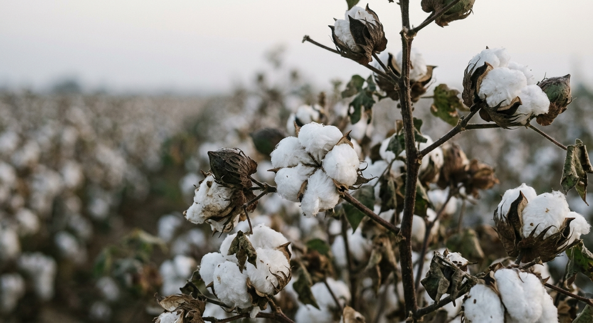

Close to Europe.
Built for export.
Egypt is the nearest large garment producer to Europe with duty-free access on three sides. It grows its own cotton, spins and knits it, and ships from the Mediterranean. Five reasons, with the numbers.

Duty free into the EU, the UK and the United States.
Under the EU-Egypt Association Agreement, in force since 2004, industrial goods of Egyptian origin enter the European Union free of customs duty. The UK-Egypt Association Agreement carries the same terms after Brexit. Into the United States, the QIZ scheme gives duty-free access for garments with 35% qualifying content, including 10.5% Israeli input.
Garments must meet the rules of origin. Silkstone's cutting and sewing in Egypt satisfies them for knitwear.
Days, not weeks.
Alexandria and Port Said to the main southern European ports in roughly three to seven days by sea. Cairo is two hours from most European capitals by air, and within two hours of every European buyer's clock. A fit comment sent at 9am in Madrid or London is answered the same morning.
A sourcing country on the way up.
Egypt's apparel exports rose about 25% year on year in the first half of 2025, to 1.6 billion dollars, and textile and garment exports reached about 2.8 billion dollars for January to October 2025. The government's target is 12 billion dollars of ready-made garment and textile exports by 2031. Buyers looking to move volume closer to Europe are finding capacity here that does not exist in Turkey or Portugal at the same cost.
Cotton at the source.
Egypt grows, gins, spins and knits cotton within a few hours of the factory. Egyptian extra-long staple is the best known, but the value for a basics programme is the short chain: origin documented, mills reachable in a day, and Better Cotton, organic and recycled yarn available with certificates. That is what a buyer's due diligence needs, and it is easier to provide when the spinner is down the road.

A skilled workforce at a competitive cost.
Egypt has one of the largest garment workforces in the region and a long tradition of sewing for European retail. Labour and energy costs are lower than in Turkey and southern Europe, and 10th of Ramadan City is an industrial zone built for export, with the infrastructure to match. Our WRAP, Sedex and ISO 45001 records show how people are treated, so the cost advantage comes with the audit trail buyers require.